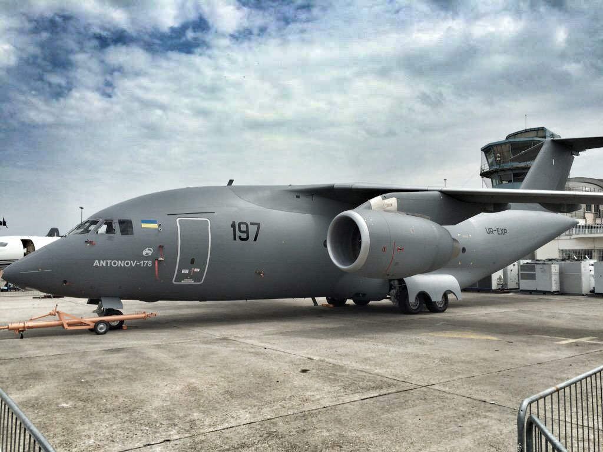

Ан-178 — український близькомагістральний військово-транспортний турбореактивний літак, розроблений ДП «Антонов» на базі пасажирського Ан-158 (Ан-148-200).
Наказ про створення нової машини було підписано 5 лютого 2010 року Генеральним конструктором-Президентом Д. С. Ківою. Викочування літака відбулося 16 квітня 2015.
Перший політ здійснив 7 травня 2015.
Ан-178 має прийти на заміну військово-транспортних літаків попереднього покоління Ан-12, Ан-26 та Ан-32. Нова машина обладнана аналогічною як і в сім'ї Ан-148 авіонікою та двигунами Д-436-148ФМ. Виробництво літака планується організувати на Серійному заводі «Антонов», також розглядаються варіанти ліцензійного виробництва за кордоном
Ан-178 — середній транспортний літак вантажопідйомністю 15-18 тонн, (два стандартних морських контейнери). Його швидкість становить 825 км/год, висота польоту — 12 км, дальність польоту — 5,5 тис. км. Літак може сідати і злітати з будь-яких аеродромів, у тому числі з ґрунтовим покриттям, що робить його придатним і для оборони. За приблизними оцінками фахівців, вартість літака, залежно від модифікації, складатиме від $ 25 — 40 млн. Станом на 7 червня 2016 триває випробування літака, він уже виконав 77 посадок.
22 жовтня 2015 року ДП «Антонов» оголосив конкурс на найкращу назву для нового літака Ан-178[21]. Опитування проводилося у мережі «Фейсбук» і за результатами опитування перше місце посідав варіант «Бандера» (на честь Степана Бандери), друге — «Амет-Хан Султан» (на честь Амет-Хана Султана) і третє — «Кіборг» (на честь захисників Донецького аеропорту)[22]. В умовах конкурсу зазначалося, що «переможе ім'я, яке отримає найбільшу кількість лайків.»[23]. Після підбиття підсумків, ДП «Антонов», однак, відмовилося виконати умови оголошеного конкурсу через причини політичного характеру, і тому літак залишається в міжнародній класифікації як Ан-178